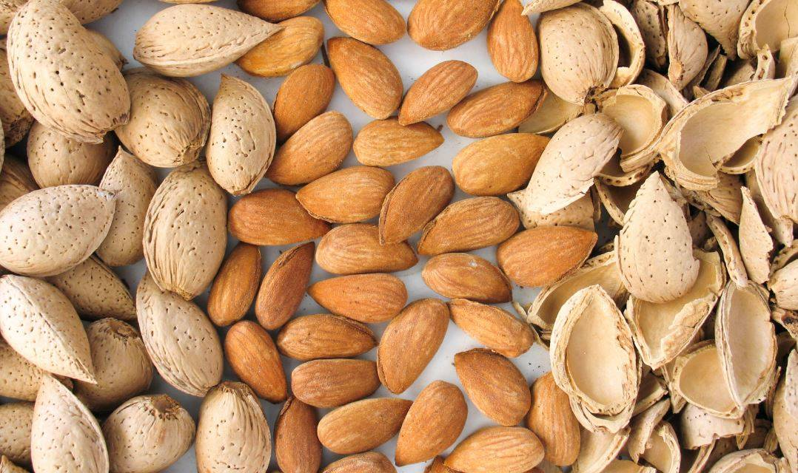

| Ingrediente | Plato Tradicional | Descripción | |
|---|---|---|---|
| Aceite de oliva | Salmorejo | Una crema fría hecha con tomate, pan, ajo y aceite de oliva. | |
| Ajoblanco | Sopa fría hecha de almendras, ajo y pan, similar al gazpacho. | ||
|
Pescado frito | Pescaíto Frito | Variedad de pescado frito típico de la costa andaluza. |
|  | Almendra | Ajoblanco | Sopa fría hecha de almendras, ajo y pan, similar al gazpacho. |
|
Vino de Jerez | Flamenquín | Carne rellena de jamón y empanada, acompañada de vino de Jerez. |